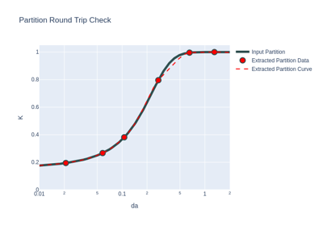
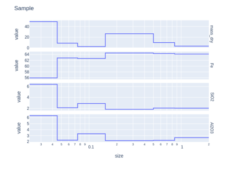
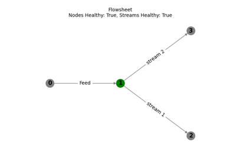
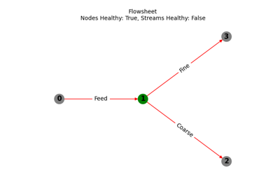

Example Gallery
Getting Started
Below is a gallery of basic examples. The simplest object is a Sample object, which is a container for a mass-composition data.


Interval Samples
Data with an index representing intervals can be used to create an IntervalSample object. Examples include drill-hole intervals and sieved samples.
Interval Data
Interval Data - Sink Float
Incremental Separation

Partition Models

Resampling Interval Data

Flowsheets
In the real world, a process flowsheet consists of process streams connected to unit operations. A Flowsheet object represents the same, with a Stream object representing the mass-composition flow and an Operation represents the unit-operations (or feed, stockpiles, outputs).

Flowsheet Basics

Flowsheet from File

Block Models
Below is a gallery of examples based on the BlockModel class.
Consuming OMF
Load Block Model
Mass Balancing
Below is a gallery of examples to deliver mass balancing.
Mass Balance
Spatial
Below is a gallery of examples that demonstrate mapping and DEM visualisation.